Futtsu, Chiba: things to do, food and stays
Futtsu · Chiba
Futtsu
Highlighted on the Chiba map.
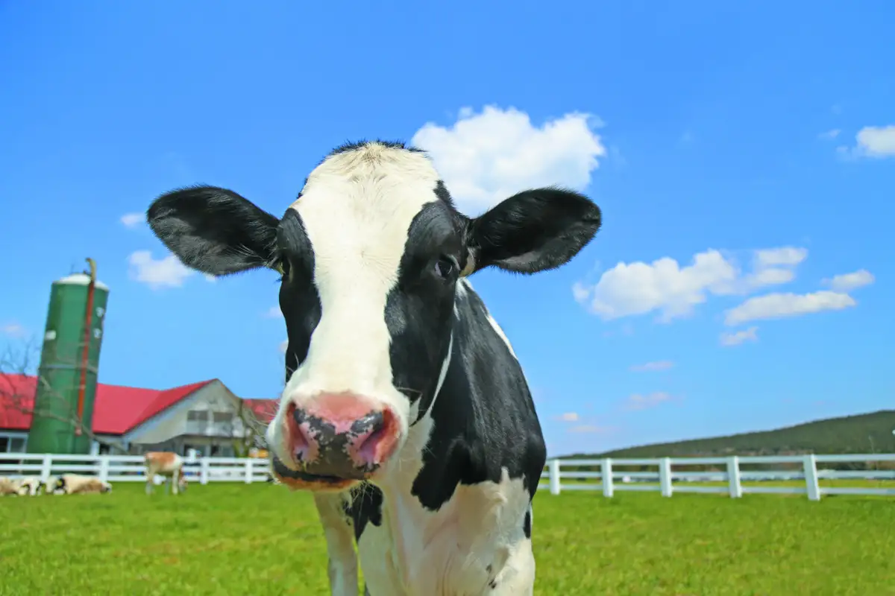
Stay
カプリハウス
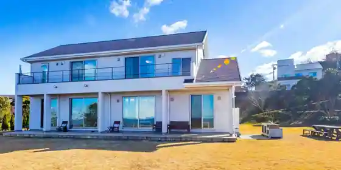
Kapuri House
Lix
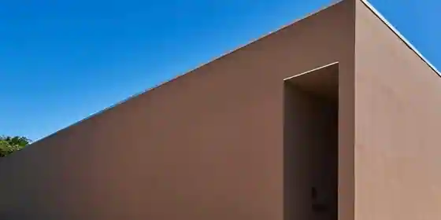
Lix
ビーチテラス房総
Bichi Terrace Boso
Inn in Kanaya, Futtsu with a sauna.
古民家宿るうふ揺之家
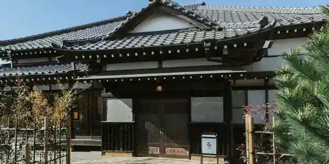
Ko Minka Yadoru Ufu Yo Yuki Ie
Inn in Kokubo, Futtsu with a renovated traditional house and family-friendly stays.
premium funny house GOKAN
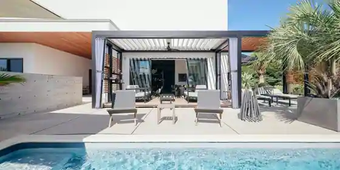
premium funny house GOKAN
primera villa
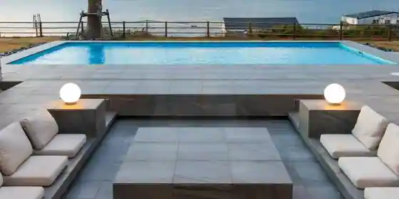
primera villa
Laf Denen
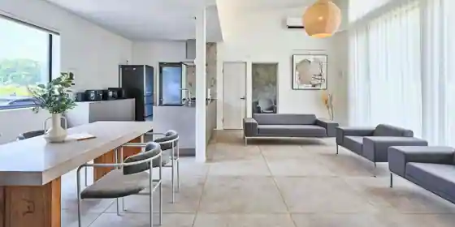
Laf Denen
Villa Paraiso
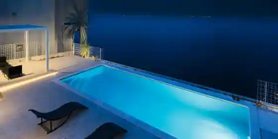
Villa Paraiso
YUTORELA 富津 with SAUNA
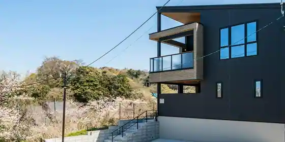
YUTORELA Futtsu with SAUNA
Inn in Minato, Futtsu with a sauna.
海と森と宿【mina-to】
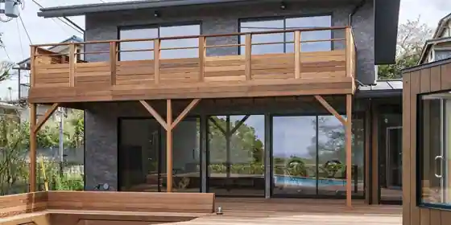
Umi To Mori To Yado (mina-to)
YUTORELA 富津 indoor GOLF
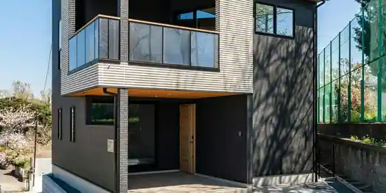
YUTORELA Futtsu indoor GOLF
CIN GARDEN TERRACE
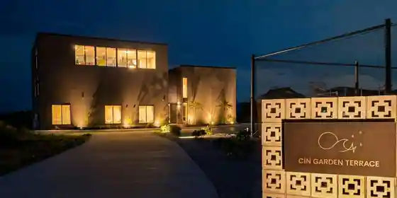
CIN GARDEN TERRACE
Dining
はまべ
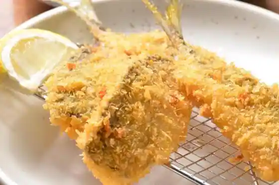
Hamabe
さすけ食堂
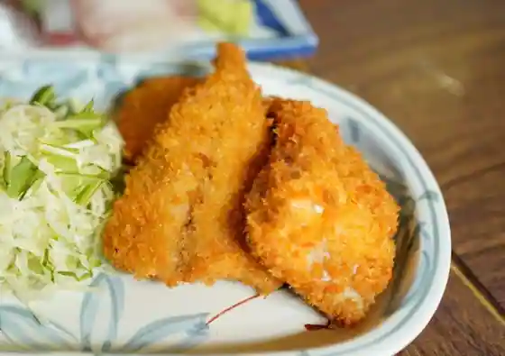
Sasuke Shokudo
鈴屋
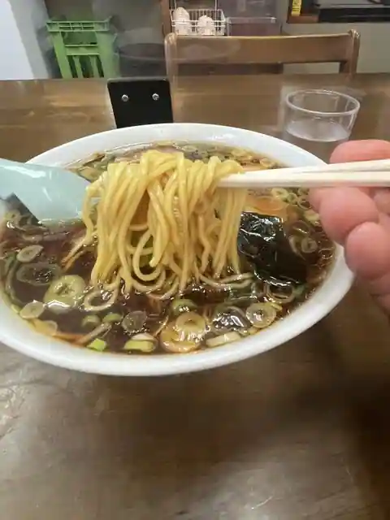
Suzunoya
梅乃家
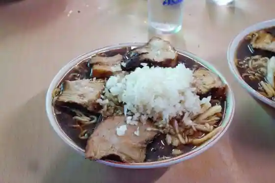
Umeno Ie
見波亭 金谷本店
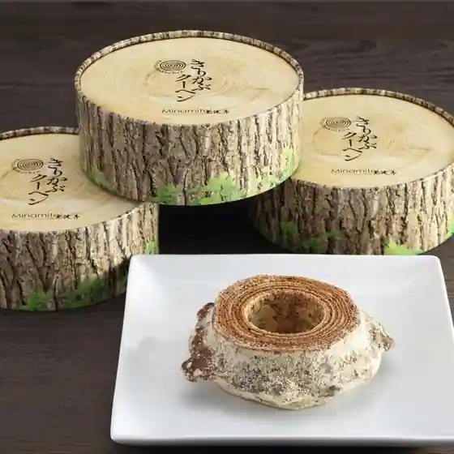
Ken Nami Tei Kanaya Hon
いそね
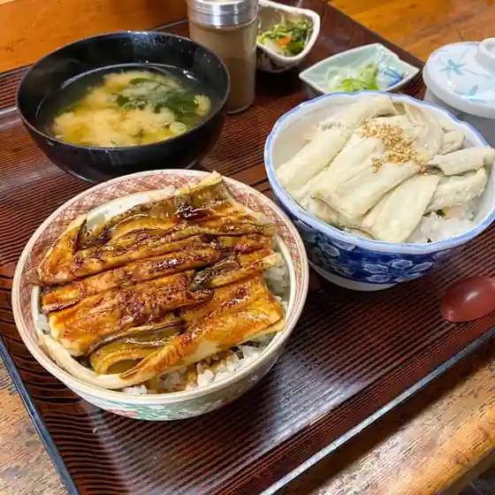
Isone
魚屋の磯料理 まるとし
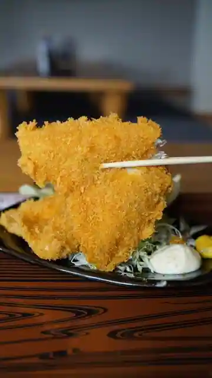
Sakanaya No Iso Ryori Marutoshi
さとみ寿司
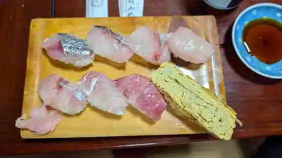
Satomi Sushi
波"
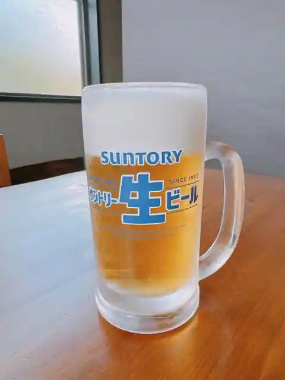
Nami "
漁師料理 かなや
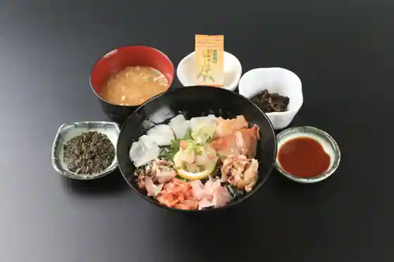
Ryoshi Ryori Kanaya
金谷食堂
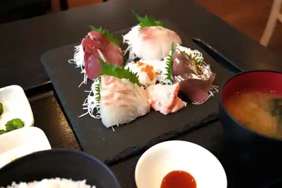
Kanaya Shokudo
船主 総本店
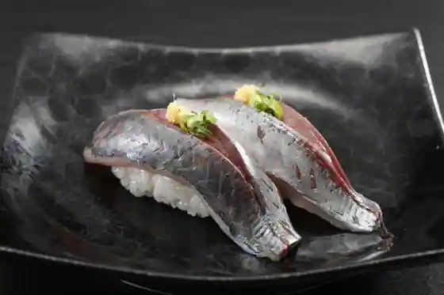
Funanushi So Hon
ザ・フィッシュ
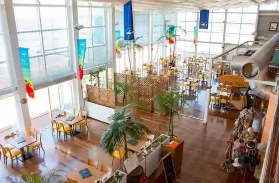
Za Fisshu
香豆珈琲
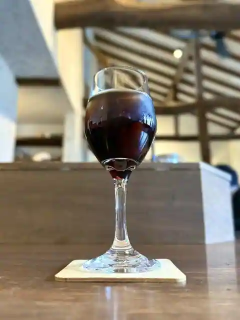
Kaori Mame Coffee
ニコニコドライブイン
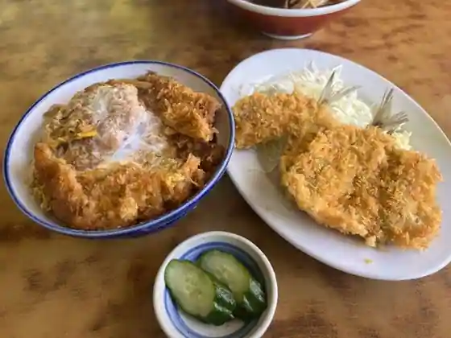
Nikonikodoraibuin
まるはま
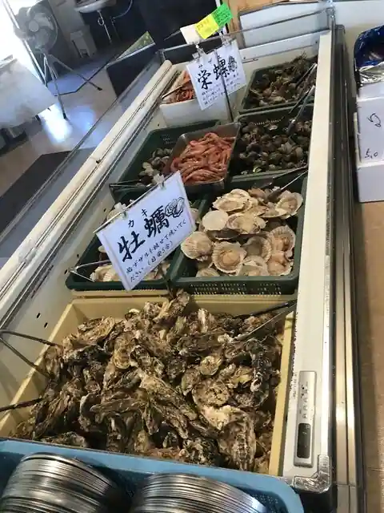
Maruhama
カフェ グローブ
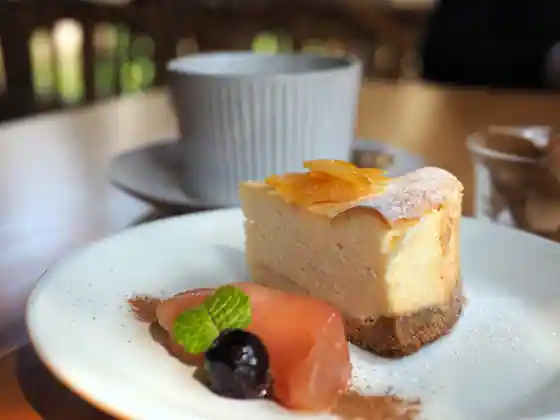
Cafe Gurobu
大定
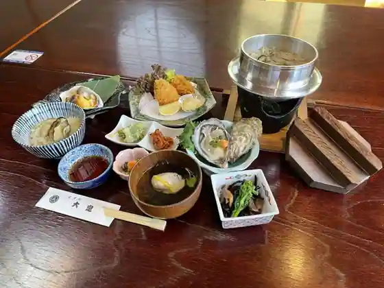
Dai Tei
ジンギスカンガーデンズ
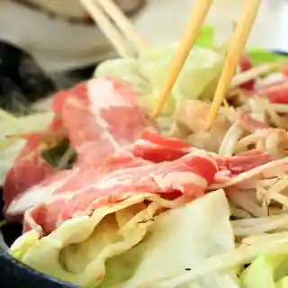
Jingisukan Garden Zu
カフェ＆ジンギスカン ファームダイナー
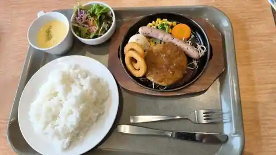
Cafe & Jingisukan Famudaina
ローズマリーカフェ
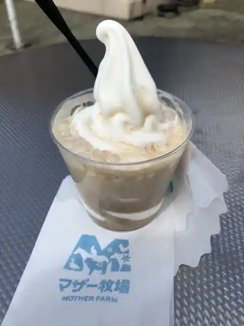
Rozumari Cafe
魚忠
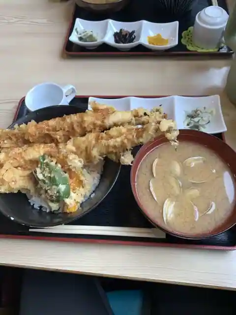
Sakana Tadashi
かん七
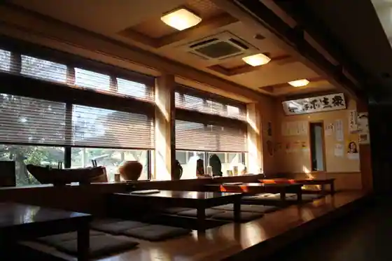
Kan Shichi
木琴堂
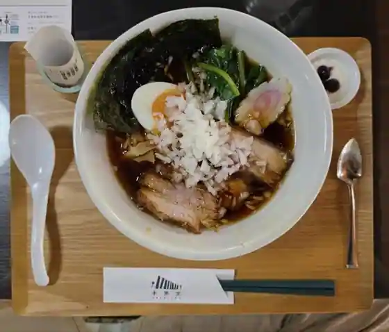
Mokkin Do
Sights
Maza Ranch
Nokogiriyama Ropue
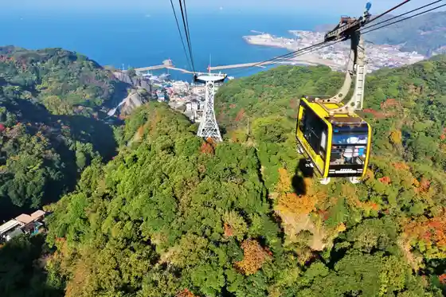
Kanaya Minato
Meiji Hyakunen Kinen Temboto
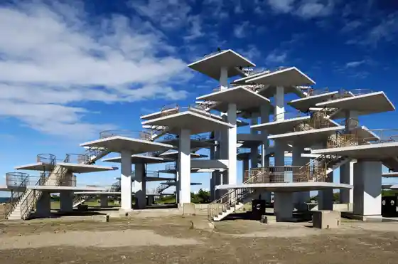
Futtsu Park
Za Fisshu
Tokyowan Kannon
BAYSIDE KANAYA (Beisaido Kanaya)
Toro Bandai Shi no Kiridoshi Tonneru
Nokogiriyama Art Museum
Tokyowan Ferii
Dai 25 Kai Aki no Kodomo Shasei Taikai / Maza Ranch
Iwatani Kannon Do Yagura Gun
Koizumi Shuzo Goshigaisha Somuriehausu Sake Takumi no Kan
Ichigo Kari / Maza Ranch
Futtsu Beach
Sambirejji Kanaya Campground
Futtsu Moto Su Horui Hodai (Naka no Shima)
Onuki Chuo Beach
Shinmaiko Beach
HOTEL&GLAMPING ACT FUTTSU
Omori Bara Engei